Where Would I Be…?Designed and built · 12 min read
Plate motion is too slow to see, so I built a globe that fast-forwards it.
Where Would I Be…? is a 3D globe I designed and built on my own. Pick a place, drag the clock, and watch the ground under it ride its tectonic plate for up to 500 million years.
- Role
- Design and build, solo
- Timeline
- September 2026
- Why
- A personal project, to make plate motion something you can feel
- Platform
- Web, on desktop and phone. Runs entirely in the browser
- Stack
- three.js and WebGL shaders, plain JavaScript modules, open plate data
- Status
- Live. No usage numbers: the site has no analytics
In short
- The problem: the ground under you moves about as fast as your fingernails grow. A speed like 56.8 mm a year means nothing to most people.
- What I built: a globe that moves all 52 plates at once. It answers in one sentence, and keeps every other number in a sheet you open when you want it.
- What changed on the way: the morning after the first version, I rebuilt the interface twice, because its panels covered the globe that gives the answer.
- Where it stands: live on the web. It carries today’s plate speeds forward unchanged, so it is an extrapolation, not a reconstruction of the past or a forecast.
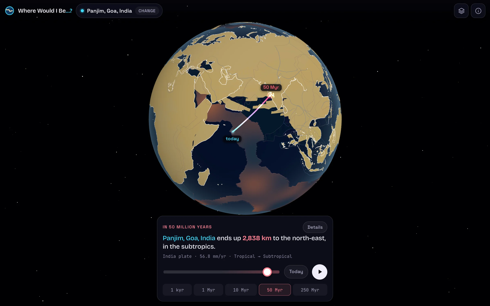
01 Why I built it
The ground moves, but too slowly to feel
The Earth’s surface is broken into tectonic plates, huge slabs of crust that slide over the hot rock below. They move a few centimetres a year. That is real, and also impossible to picture.
I wanted to give that speed a place you know. Pick your town, run the clock, and see where the ground under it ends up.
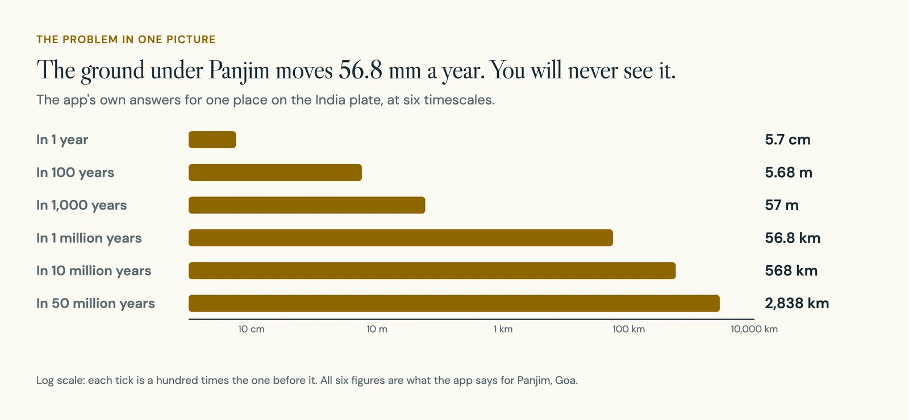
02 How it works
Pick a place, run the clock, open the rest only if you want it
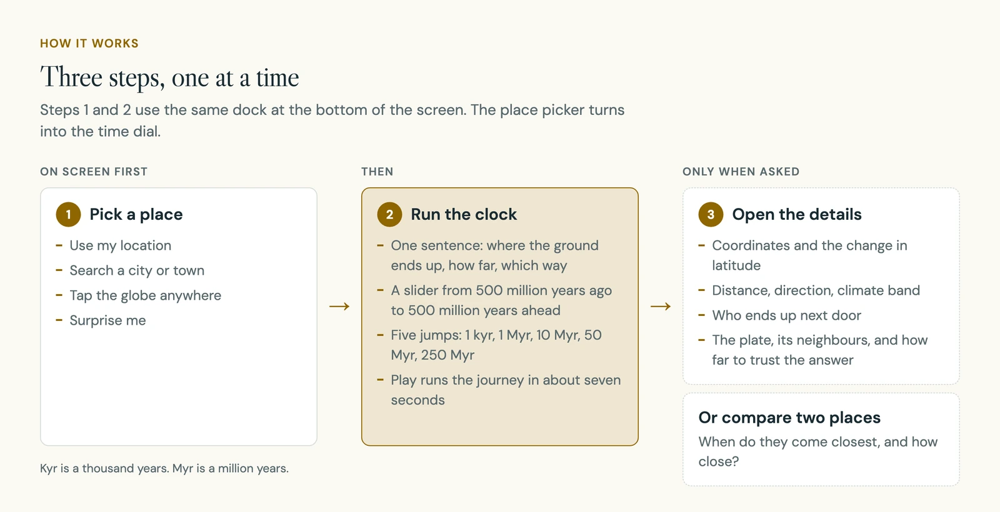
The first screen asks one thing: where are you? Everything else waits until there is a place to talk about.
You can use your location, search a city, tap anywhere on the globe or let it pick for you. Your location is used in the browser and never sent anywhere.
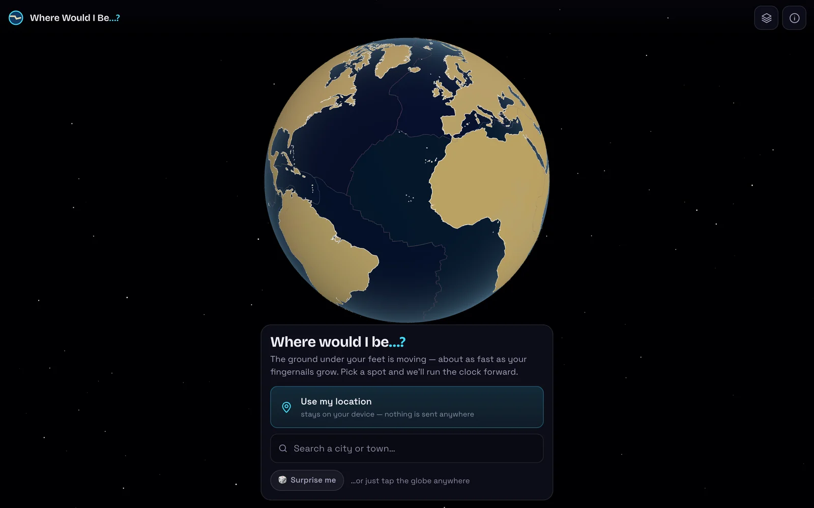
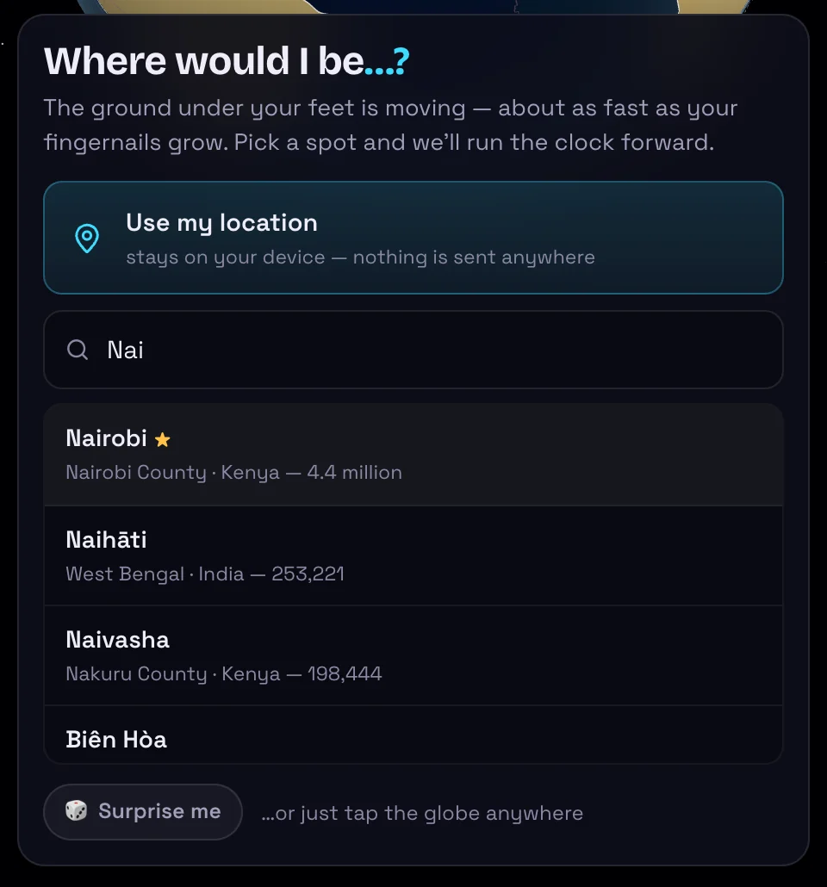
Then the clock. The slider runs from 500 million years ago to 500 million years ahead. Five buttons jump to 1,000 years, 1 million, 10 million, 50 million and 250 million. Play runs the whole journey in about seven seconds.
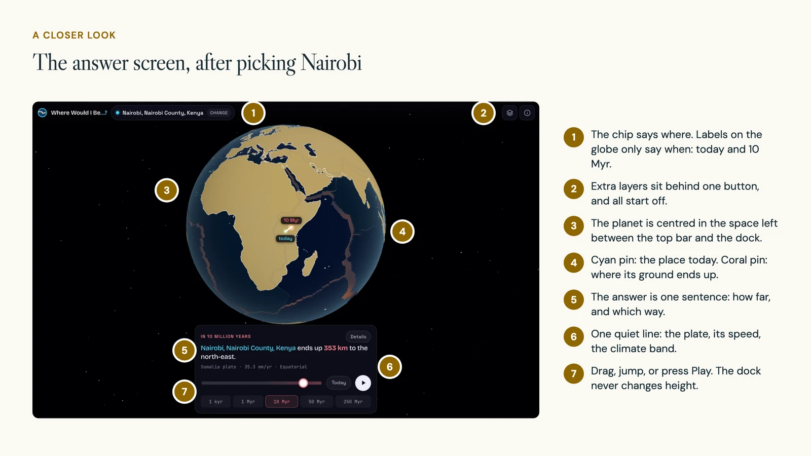
03 Decision 1
Nothing covers the globe, because the globe is the answer
What you see: a top bar, the globe and one dock at the bottom. Nothing floats over the middle of the screen, where the two pins and the track are doing the explaining.
In the build: the first version did the opposite. It opened two panels over the planet. Before you had done anything, they showed six expanded cards and about 25 numbers.
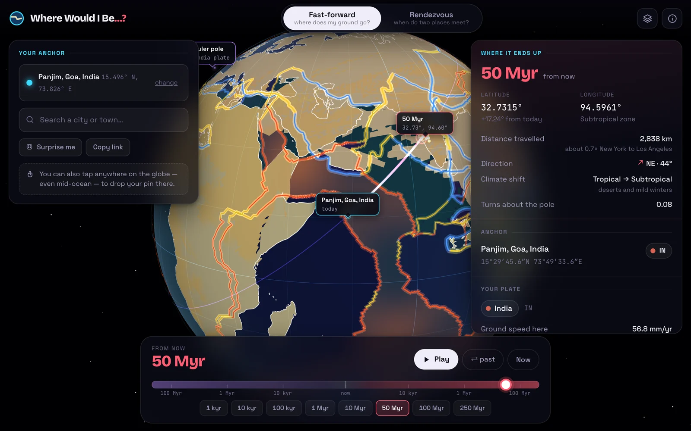
The next morning I rebuilt it around one question at a time: pick a place, then explore it. On a phone, though, the answer sheet still took about two thirds of the screen, and very little of the planet was left in view. So I rebuilt it again.
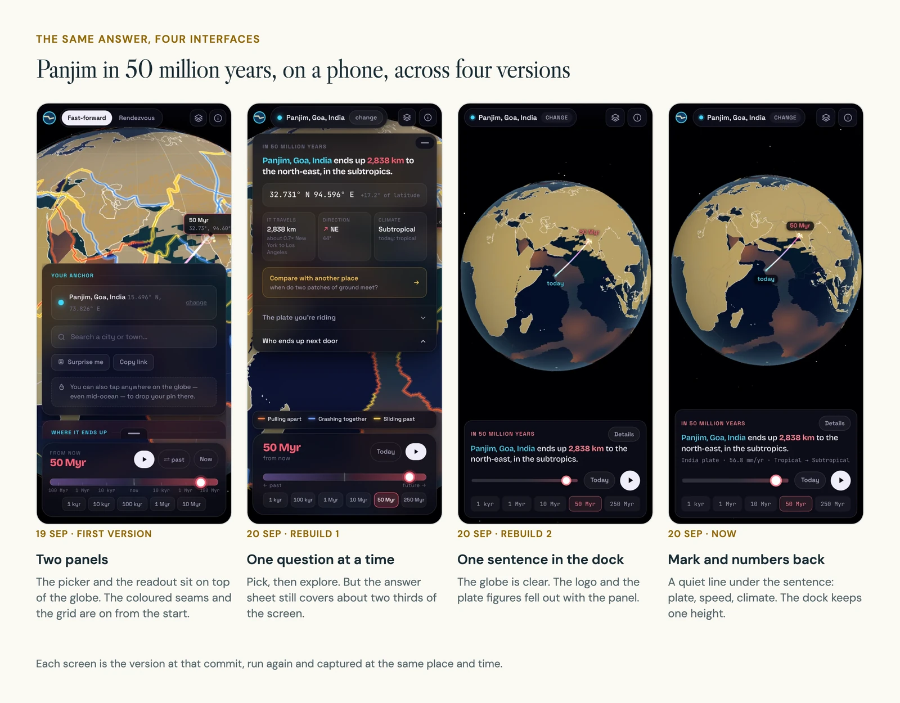
Clearing the screen was not enough on its own. With a dock at the bottom, a centred planet hides its lower third behind it. So the app measures how much room the top bar and the dock take. It moves the globe into the space that is left, and backs the camera off until the whole planet fits.
04 Decision 2
One sentence first, and every number one tap away
What you see: “Panjim, Goa, India ends up 2,838 km to the north-east, in the subtropics.” Under it, one line: the plate, its speed, and the climate then and now. The rest is in a details sheet.
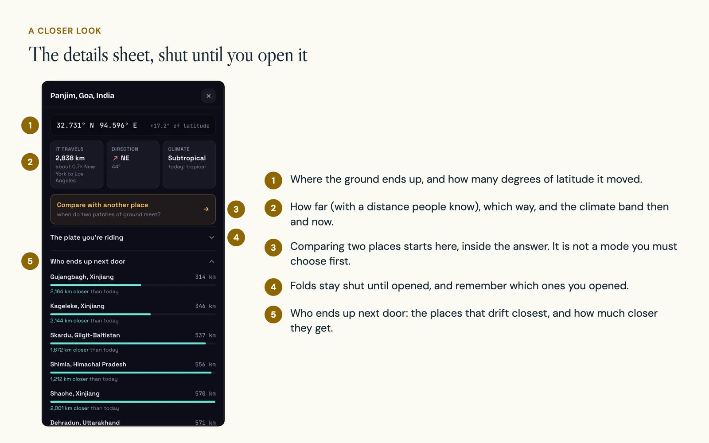
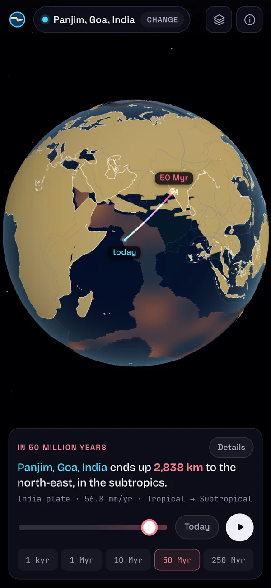
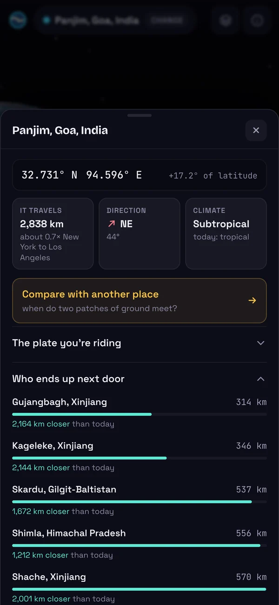
In the build: my first one-sentence version went too far. It dropped the plate name and speed into a fold, and never stated the climate change at all. I put them back as that quiet second line.
The sentence changes on every frame while you drag. I wanted dragging to move the globe and the numbers and nothing else. The dock keeps one height for its whole life, and each frame only rewrites the words already on the page. Over a 201-step drag, the page made zero changes to its structure, down from 400.
Writing the sentence also caught a real bug. It used the plate’s direction of travel to say where the ground went. Run backwards, that is the wrong way round. Panjim “sat 2,838 km to the north-east” 50 million years ago, when it was really to the south-west. The sentence now uses the actual line from start to end.
05 Decision 3
The plate seams are always drawn, but quietly
What you see: a faint grey line where one plate meets the next. One switch turns it into colours: pulling apart, crashing together or sliding past. The key comes on screen with the colours and goes away with them.
In the build: this one took four tries over two days.
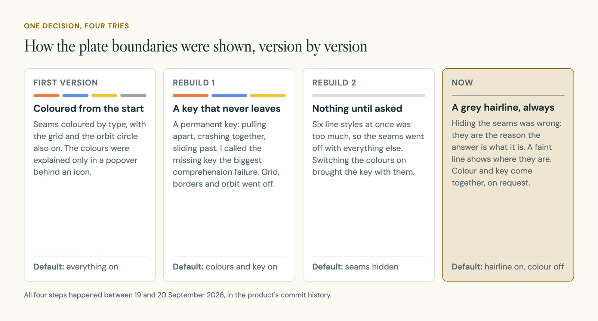
Hiding the seams completely was wrong. They are the reason the answer is what it is: you can see that the line runs between your town and the next country. But naming, in three colours, which way every stretch is moving is a lecture nobody asked for.
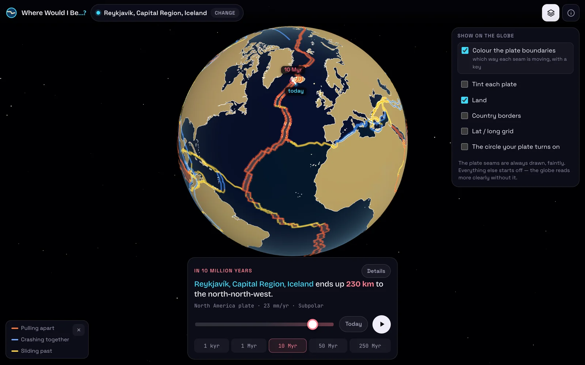
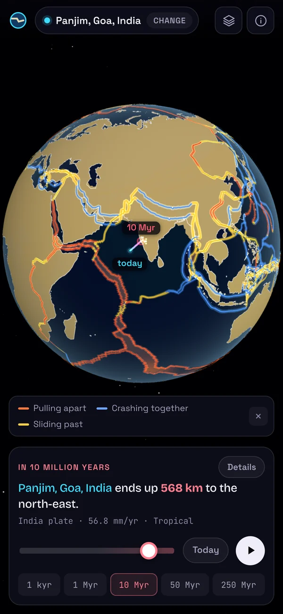
The colours are worked out, not painted on. Nothing in the data says “this is a mid-ocean ridge”. For every short stretch of every plate edge, the build script finds the plate on the other side and compares how the two are moving. It splits that into opening and sliding. The checks compare the results with published rates at twelve well-known boundaries.
06 Decision 4
Comparing two places asks when they come closest
What you see: pick a second place and the app says when the two patches of ground come closest, how close, and how fast they are closing.
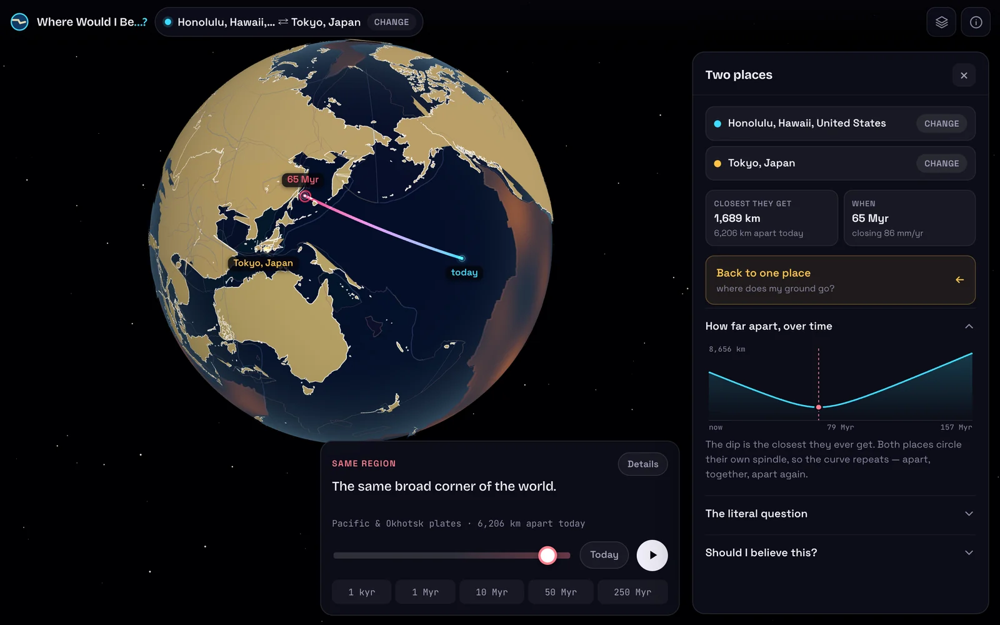
In the build: each place turns on its own circle around its plate’s pole. So the distance between two places rises and falls with no simple formula for the lowest point. The solver scans a billion years in coarse steps, keeps every dip, then narrows each one down.
I checked it against a brute-force answer from 400,000 evenly spaced samples. Places on the same plate are handled on their own: they never move apart, so the app says so.
07 How far to trust it
The app says how far to trust its own answer
The plate speeds come from a published model, NNR-MORVEL56, averaged over roughly the last 780,000 years. The app carries those speeds forward unchanged. Real plates change course, jam and break.
So this is an extrapolation. It is not a reconstruction of where places were, and not a prediction of where they will be. Running the clock backwards uses the same assumption, so the past is not reconstructed either.
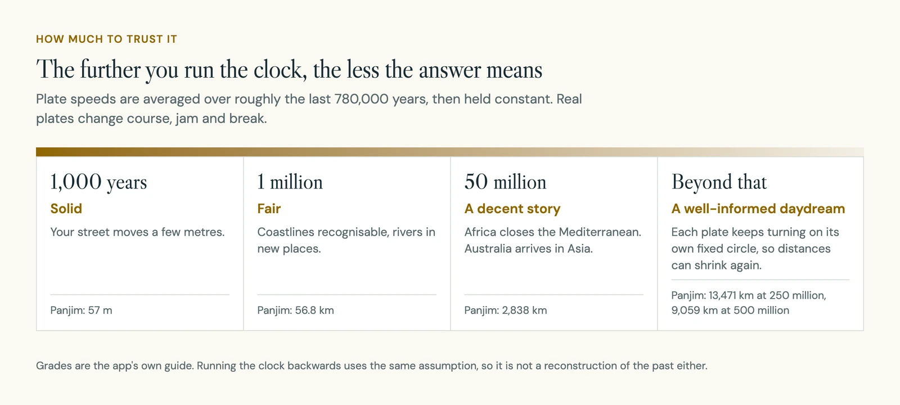
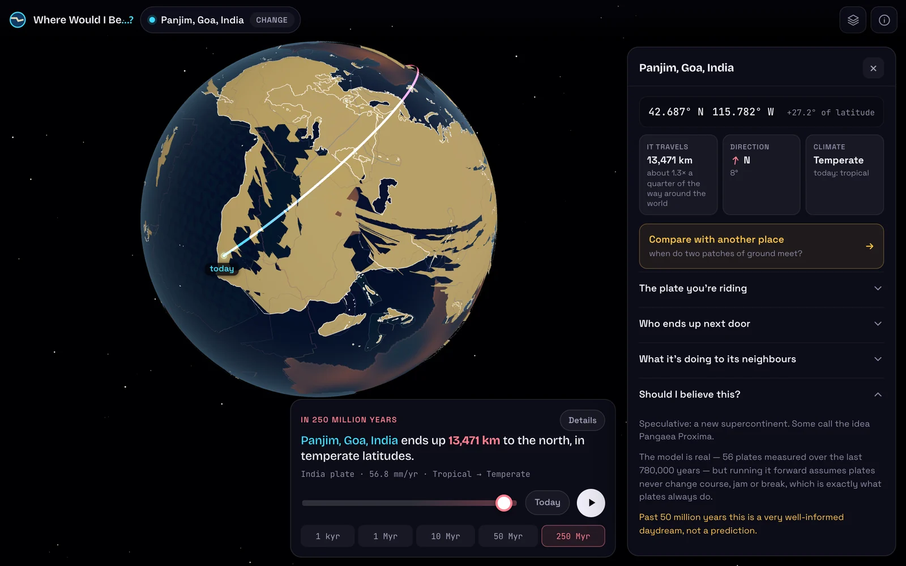
08 The build
Every plate moves on the graphics card
Each plate behaves like a rigid cap turning on a sphere around one fixed point, its pole. Give a plate its pole and its rate, and the future of every point on it is one rotation. That is what lets the app redraw the world for any year instantly.
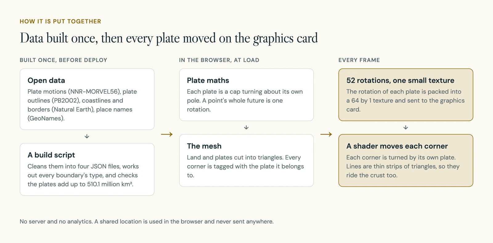
Every corner of the map is tagged with the plate it belongs to. On each frame, the 52 plate rotations go to the graphics card packed into one tiny 64 by 1 image. A shader, a small program that runs on the graphics card, turns each corner by its own plate. Lines are drawn as thin strips of triangles, so they ride the crust too.
| Part | What I used |
|---|---|
| Globe | three.js, with my own shaders for plate motion |
| Shapes | earcut to cut land and plates into triangles, then my own refinement |
| Code | Plain JavaScript modules. No build step and nothing to install |
| Data | NNR-MORVEL56 plate motions, PB2002 plate outlines, Natural Earth coastlines, GeoNames places |
| Checks | A script of science and geometry checks, run with Node |
| Hosting | Static files, with a strict content security policy |
The checks cover which plate a place sits on, motion at twelve famous boundaries, that rotations agree with themselves, that both sides of a shared edge agree, plate areas, place search and the closest-approach solver. The plate outlines must add up to the Earth’s 510.1 million km².
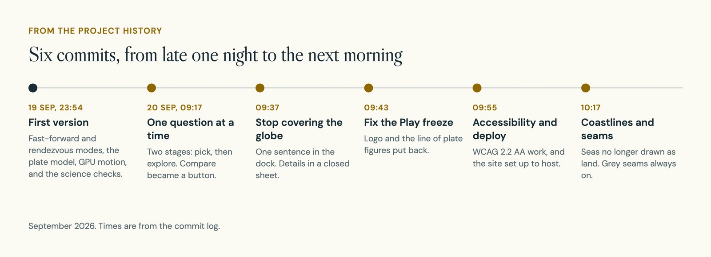
The hardest problems were in the triangles, not the interface.
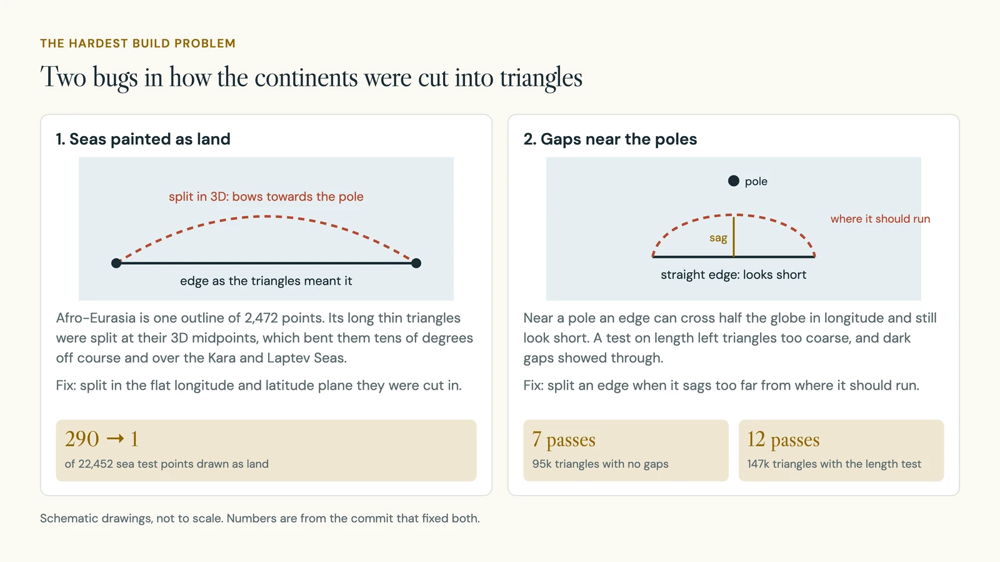
| Problem | What went wrong, and what I changed |
|---|---|
| Seas drawn as land | Long thin triangles were split along a curve the flat map never meant. Splitting in the flat map instead took sea test points drawn as land from 290 to 1 of 22,452. |
| Gaps at the poles | Near a pole a long edge measures short. Splitting by sag instead of length closed every gap in 7 passes and 95k triangles, against 12 passes and 147k. The finished mesh got smaller. |
| Play froze the app | Play wrote to a label I had deleted in the rebuild. The error stopped the drawing loop, so the whole globe froze. The loop now books its next frame first and survives a bad one. |
09 Accessibility
A 3D globe that also works from the keyboard
I built to WCAG 2.2 AA, the common accessibility standard for the web, and measured rather than assumed.
- Contrast is tested where it is worst: the see-through dock over the brightest land on the globe. Measured that way, the faintest text was 2.88 to 1. I made the dock more solid and lightened that text to reach 4.7 to 1.
- The globe works from the keyboard. Arrows turn it, plus and minus zoom, and Enter drops a pin at the centre of the view.
- Screen readers hear the answer sentence when it changes. During Play it stays quiet, instead of reading out hundreds of passing sentences.
- The slider reads as words, such as “50 Myr from now”, not as a raw number.
- The details sheet and the About panel keep keyboard focus inside while open, close with Escape, and return focus where it was.
- With reduced motion switched on, the globe stops spinning and Play jumps straight to the end.
- Every pointer target is at least 24 by 24 pixels.
10 Where it stands
Live, with no numbers to share
Where Would I Be…? is live on the web and works on desktop and phone. It has no server and no analytics, by design, so I have no visitor counts, and no feedback or user sessions to report.
11 What is next
Find out what people take away from it
- A small study I would run: let someone explore for a few minutes, then ask what changed and what the model assumes.
- Check whether the warning stays visible enough at far dates, since the sentence itself carries none.
- Test the globe on narrow screens with the keyboard and with reduced motion, beyond my own checks.
12 What I learned
Ask why the panel is there before tidying it
My first rebuild cleaned up the panel. It did not ask why there was a panel. The globe was the answer the whole time, and anything laid over it was working against the product.
I also learned to swing back. I hid the plate seams to quiet the screen, and that hid the reason for the answer. I cut the numbers to one sentence, and that dropped the plate and its speed. Both times the fix sat between my first two tries.
A home for my writing, in the form it needs.